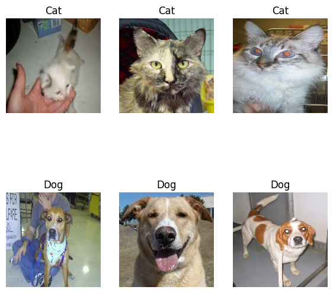
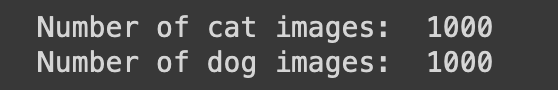

Task: Teach a machine learning algorithm to distinguish pictures of dogs and cats.
Before starting, I had to import all the libraries for this assignment.
# importing the necessary libraries
import os
from keras import utils, datasets, layers, models
import keras
import tensorflow_datasets as tfds
import matplotlib.pyplot as plt1. Access the Data
We imported data from a Kaggle dataset that had pictures of cats and dogs. I used the code provided in the homework assignment to do this.
train_ds, validation_ds, test_ds = tfds.load(
"cats_vs_dogs",
# 40% for training, 10% for validation, and 10% for test (the rest unused)
split=["train[:40%]", "train[40%:50%]", "train[50%:60%]"],
as_supervised=True, # Include labels
)
print(f"Number of training samples: {train_ds.cardinality()}")
print(f"Number of validation samples: {validation_ds.cardinality()}")
print(f"Number of test samples: {test_ds.cardinality()}")We also had to resize the images to a fixed size of 150 x 150 since they were not consistent in size. This will allow us to manipulate the NumPy arrays.
# resizing the images so that they are a fixed size of 150 x 150
resize_fn = keras.layers.Resizing(150, 150)
train_ds = train_ds.map(lambda x, y: (resize_fn(x), y))
validation_ds = validation_ds.map(lambda x, y: (resize_fn(x), y))
test_ds = test_ds.map(lambda x, y: (resize_fn(x), y))This tutorial was largely based off of the Transfer Learning Tutorial via TensorFlow. Some of the code was also taken from there.
Here are some snippets of the code that I used from the website:
# downloading all the necessary data _
_URL = 'https://storage.googleapis.com/mledu-datasets/cats_and_dogs_filtered.zip'
path_to_zip = tf.keras.utils.get_file('cats_and_dogs.zip', origin=_URL, extract=True)
PATH = os.path.join(os.path.dirname(path_to_zip), 'cats_and_dogs_filtered')
train_dir = os.path.join(PATH, 'train')
validation_dir = os.path.join(PATH, 'validation')
BATCH_SIZE = 32
IMG_SIZE = (160, 160)"""
Creating the validation and test training datasets.
"""
train_dataset = tf.keras.utils.image_dataset_from_directory(train_dir,
shuffle=True,
batch_size=BATCH_SIZE,
image_size=IMG_SIZE)
validation_dataset = tf.keras.utils.image_dataset_from_directory(validation_dir,
shuffle=True,
batch_size=BATCH_SIZE,
image_size=IMG_SIZE) This dataset had photos of both dogs and cats with labels that correspond to each animal. Cats were assigned the value 0, while dogs were assigned the value 1.
1a. Plotting Dogs and Cats
After I imported all the data from the TensorFlow, the homework challenged us to first play around with the dataset. We were tasked to create a plot that has 3 cats in one row and 3 dogs in the second row.
To achieve this, I created a function called two_row(dataset) that takes in a dataset (Here, we would use the test_training sets.). The explanation will be at the bottom.
def two_row(dataset):
"""
Purpose: Sorts dogs and cats into distinct rows and outputs a total of 6 images.
"""
plt.figure(figsize=(7, 7)) # initializing the plot
# initializing the counters
cats_count = 0
dogs_count = 0
for images, labels in dataset.take(1):
for i in range(len(images)):
if cats_count < 3 and labels[i] == 0: # counts the cats
ax = plt.subplot(2, 3, cats_count + 1)
plt.imshow(images[i].numpy().astype("uint8"))
plt.title("Cat")
plt.axis("off")
cats_count += 1
elif dogs_count < 3 and labels[i] == 1: # counts the dogs
ax = plt.subplot(2, 3, 3 + dogs_count + 1)
plt.imshow(images[i].numpy().astype("uint8"))
plt.title("Dog")
plt.axis("off")
dogs_count += 1
if cats_count == 3 and dogs_count == 3:
break # Exit the loop if both cats and dogs count reach 3
plt.show()
two_row(train_dataset)Explanation:
for images, labels in dataset.take(1)- This goes through both the image and label values and puts them into the condition.cats_countanddogs_count- This keeps track of how many dog/cat photos we have.if and elif- This is a modification of how the cats and dogs were initially displayed in the 3 x 3 plot, but this time prioritizes putting the same values (cats all in one row) together.
After completing this, this is the output: 
1b. Check Label Frequencies
We are also interested in how many images of each class our dataset has. I used the iterator provided by the homework to achieve this: labels_iterator= train_ds.unbatch().map(lambda image, label: label).as_numpy_iterator(). I created a for-loop to count how many of each type exists.
labels_iterator= train_dataset.unbatch().map(lambda image, label: label).as_numpy_iterator()
def unique_names(labels_iterator):
# initializing the counters
dog_count = 0
cat_count = 0
for label in labels_iterator:
if label == 0:
cat_count += 1
elif label == 1:
dog_count += 1
print("Number of cat images: ", cat_count)
print("Number of dog images: ", dog_count)
unique_names(labels_iterator)
2. First Model
Next, we are tasked to create a keras.Sequential model using the layers that I learned from class.
This is the model that I wrote which has all of the necessary requirements:
# building the sequential model
model1 = models.Sequential([
layers.InputLayer(input_shape=(160,160,3)), # initial input
# Hidden layers
layers.Conv2D(16, (3,3), activation='relu'),
layers.MaxPooling2D((2,2)),
layers.Conv2D(16, (3,3), activation='relu'),
layers.MaxPooling2D((2,2)),
layers.Conv2D(32, (3,3), activation='relu'),
layers.MaxPooling2D((2,2)),
# Output
layers.Flatten(),
layers.Dense(64, activation='relu'),
layers.Dropout(0.3),
layers.Dense(5)
])Explanation:
Conv2D-MaxPooling2D-Flatten()-Dense(64, activation='relu')-Dense(5)-
Now, lets check the summary of our model.
model1.summary()Model: "sequential"
_________________________________________________________________
Layer (type) Output Shape Param #
=================================================================
conv2d (Conv2D) (None, 158, 158, 16) 448
max_pooling2d (MaxPooling2 (None, 79, 79, 16) 0
D)
conv2d_1 (Conv2D) (None, 77, 77, 16) 2320
max_pooling2d_1 (MaxPoolin (None, 38, 38, 16) 0
g2D)
conv2d_2 (Conv2D) (None, 36, 36, 32) 4640
max_pooling2d_2 (MaxPoolin (None, 18, 18, 32) 0
g2D)
flatten (Flatten) (None, 10368) 0
dense (Dense) (None, 64) 663616
dropout (Dropout) (None, 64) 0
dense_1 (Dense) (None, 5) 325
=================================================================
Total params: 671349 (2.56 MB)
Trainable params: 671349 (2.56 MB)
Non-trainable params: 0 (0.00 Byte)
_________________________________________________________________